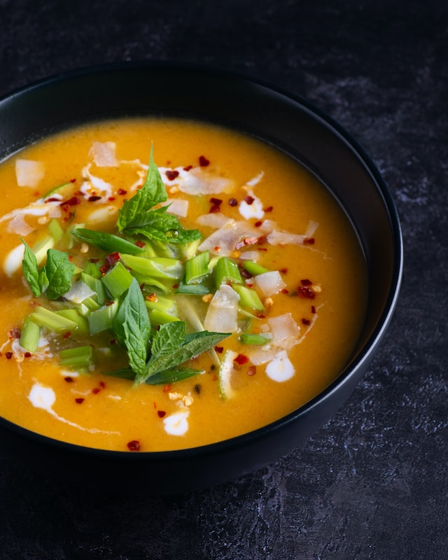

Soup recipe

Pumpkin Orange Banana Smoothie
Smooth and creamy, this unconventional smoothie is as delicious as it is
nutritious. Its deep orange colour is a clear sign this smoothie is
brimming with antioxidants—it's packed with beta carotene and vitamin C.
Ingridients:
-
1 cup / 250 ml skim milk, or unsweetened pea milk, or unsweetened soy
milk
- 1/2 cup / 125 ml pure pumpkin puree
- 1/2 cup /125 ml 100% orange juice
- 1 medium banana, sliced
- 4 ice cubes, optional
Steps:
-
Combine all ingredients in a blender and purée until smooth. Serve cold.